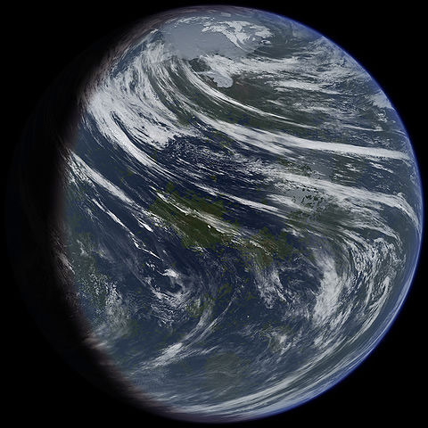

Moons

Venus’s Fake Moon 1
This moon is amazing it looks like it’s habitable by humans.
- Diameter (km)
- 22.2 km
- Mass (kg)
- 2×1015 km
- Orbital period
- 30.35 h

Venus’s Fake Moon 2
Look at all the pretty colours of this moon—mustn’t be real-colour.
- Diameter (km)
- 12.6 km
- Mass (kg)
- 10.8×1015 km
- Orbital period
- 7.66 h
Discovery of Venus's Moons

Venus is always brighter than any star. The greatest luminosity, apparent magnitude −4.9, occurs during crescent phase when it is near Earth. Venus fades to about magnitude −3 when it is backlit by the Sun. The planet is bright enough to be seen in a mid-day clear sky,[90] and it can be easy to see when the Sun is low on the horizon. As an inferior planet, it always lies within about 47° of the Sun.
Venus "overtakes" Earth every 584 days as it orbits the Sun.